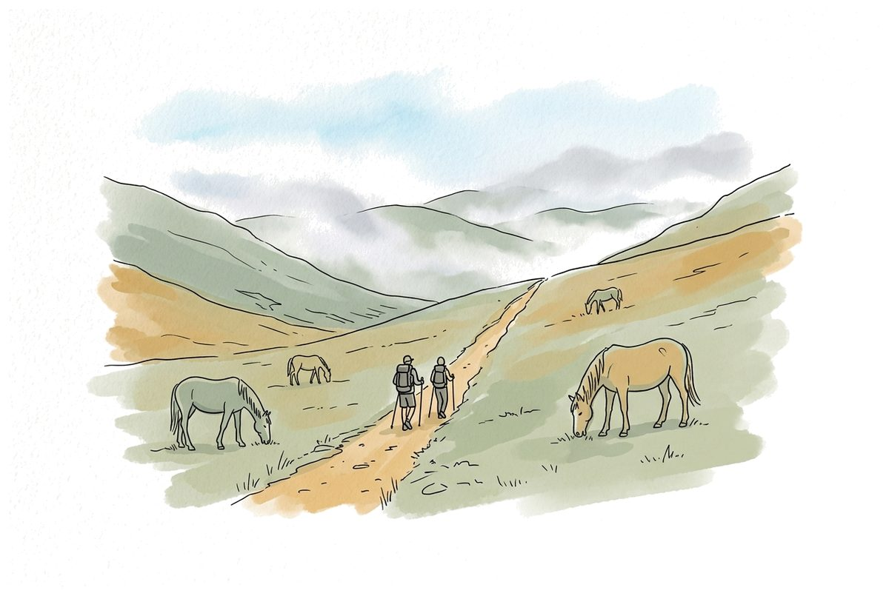
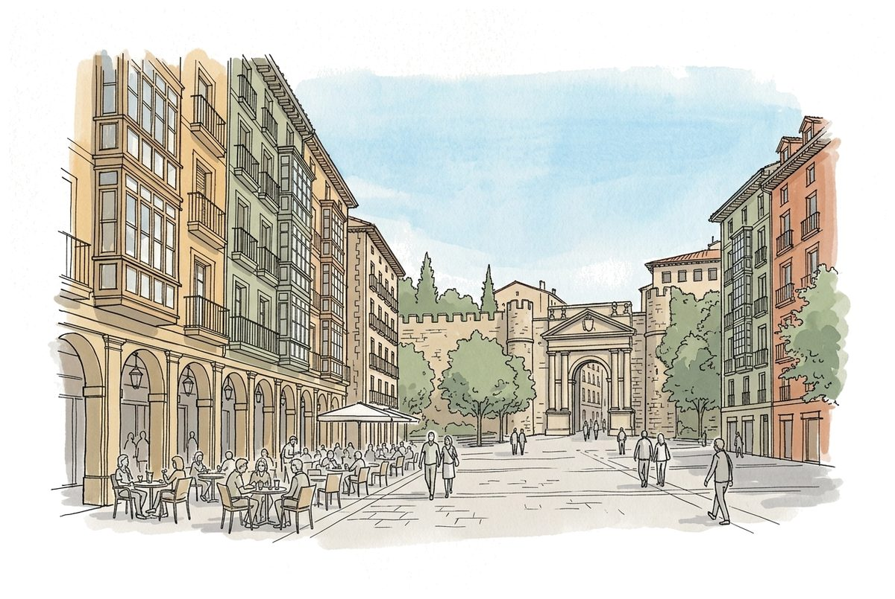
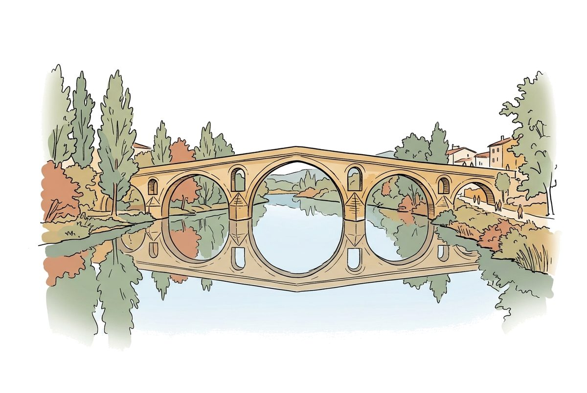
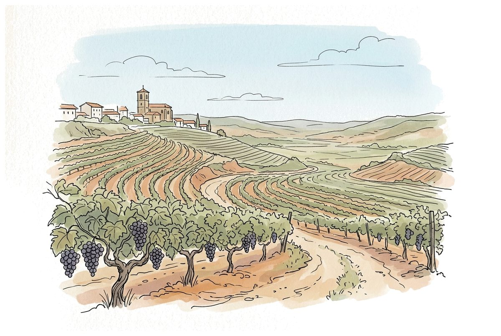
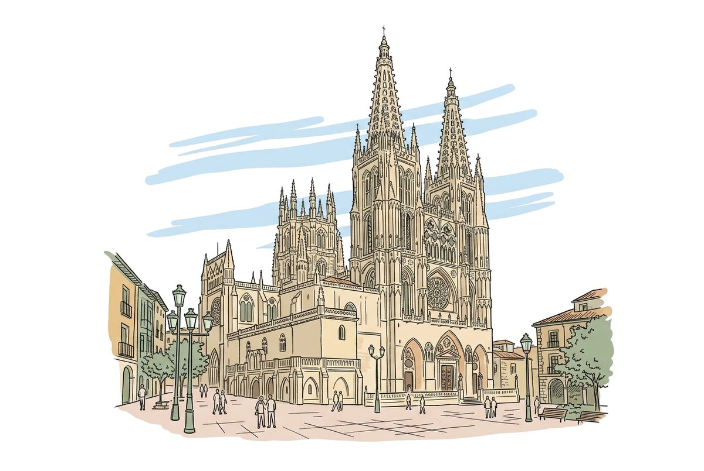
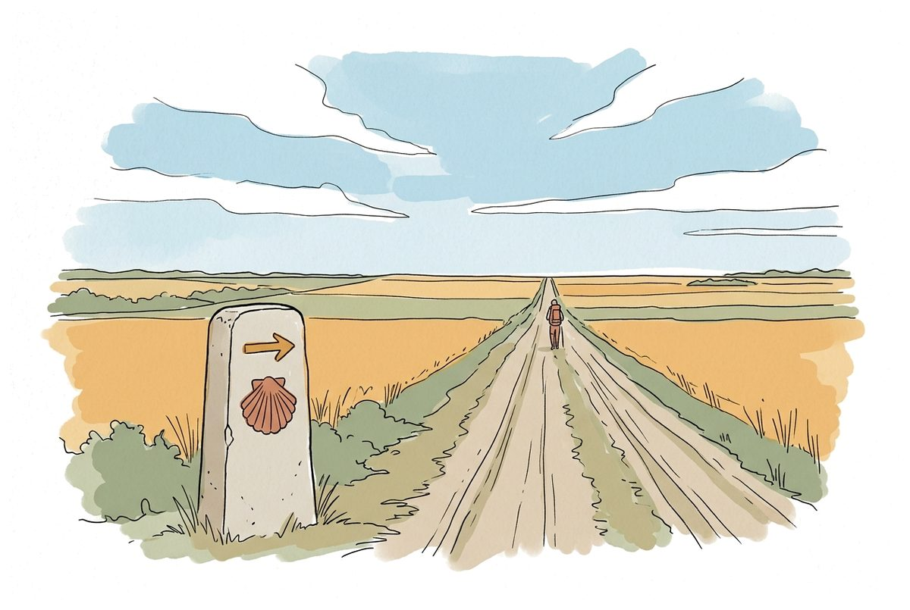
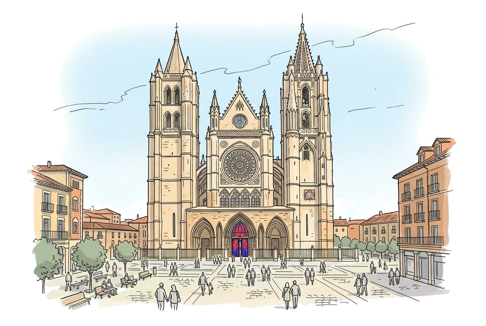
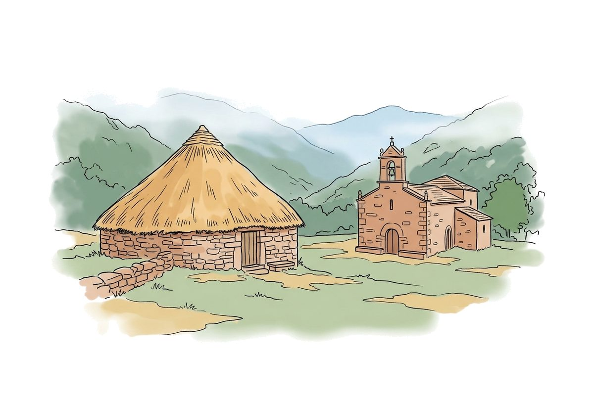
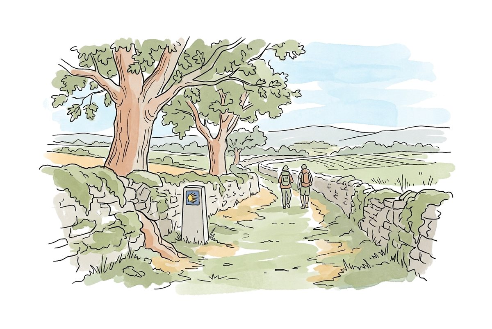
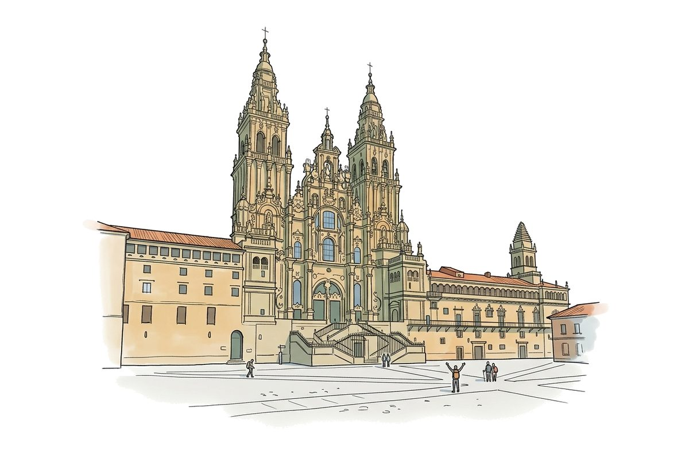

Voyage · grand public · chemin de Saint-Jacques
L'application suit le Camino francés : 10 étapes choisies sur une trentaine, de Roncesvalles à Santiago (775 km, environ 33 jours de marche). Une tous les trois jours de marche environ : chaque étape est une situation nouvelle, dont le pèlerin aura besoin ce soir-là, et chacune se déroule de la même façon, en sept temps. Le pèlerin avance de lieu en lieu ; ce qui a été appris revient plus loin, sans prévenir.
Comprendre avant de dire. Dire avant de jouer. Jouer avant d'y aller seul.
L'espagnol accorde : cansado, cansada ; alérgico, alérgica. Chaque modèle, chaque phrase à dire, chaque réponse attendue est au bon genre.
Noix, arachides, gluten, lait, œufs, poisson, fruits de mer, sésame. Elle traverse tout : la scène de León, le comptoir de Pamplona, la trousse, le test, et un son par allergène.
➜ Le même parcours, mais c'est son allergie qu'on apprend à dire.
Huit entraînements de quinze minutes, dans les semaines qui précèdent le départ — conseillés, jamais obligatoires. Chacun met un objet dans le sac (les chaussures, la coquille, le porte-monnaie…) et apprend les outils qu'on emploiera ensuite en situation :
Dire lisiblement les formules et les mots du chemin
Dire lisiblement les formules et les mots du chemin
Comprendre un prix ou une heure
Comprendre un prix ou une heure
Formuler une demande ou une question
Formuler une demande ou une question
Se présenter
Comprendre une réponse courte
Chaque entraînement suit un fil d'Ariane, dans l'ordre — un temps s'ouvre quand le précédent est fait : la leçon (une guide l'explique à voix haute, la voix d'Espagne dit les exemples), j'écoute (les phrases et les mots), je reconnais (on entend, on choisit, chaque erreur dit pourquoi), je le dis (au micro, puis le modèle). Un aide-mémoire donne la seule forme qui sert — jamais la conjugaison entière. À la fin, la marche d'essai « Prêt à partir ? » situe, deux formes équivalentes.
On reçoit, on reconnaît, puis on agit. L'ordre ne change jamais, et il est tenu : un fil d'Ariane en tête de l'écran, chaque temps s'ouvre quand le précédent est fait ; une étape tamponnée se rejoue librement.
Où je suis : l'histoire, ce qu'on y visite, les mots du tourisme — avec leur voix.
Des cartes dessinées. Je touche, j'entends ; la traduction reste cachée d'abord.
Un mot entendu, quatre images : je reconnais à l'oreille.
La personne du lieu répond à sa vitesse : que veut-elle dire ? Plus des rappels des jours passés.
La situation jouée : j'écoute d'abord, je choisis ou je réponds à voix haute.
Ce que je viens d'entendre, à moi de le dire au micro ; puis j'écoute le modèle.
Une conversation entre pèlerins. Marta se souvient de ce que j'ai dit la veille.

Obtenir un lit à l'albergue, et comprendre le prix, l'heure du souper et celle de la porte.

Commander au comptoir, comprendre le prix, et savoir si un plat contient ce qu'on ne peut pas manger.
+ rappels des jours passés
Demander son chemin, faire ralentir, et suivre l'indication même dite vite.
+ rappels des jours passés
Dire où l'on a mal, et comprendre comment prendre le médicament.
+ rappels des jours passés
Comprendre « complet » et la solution proposée ; réserver une chambre au téléphone ; retrouver l'adresse.
+ rappels des jours passés
Dire d'où l'on vient et pourquoi l'on marche ; écouter l'autre et réagir.
+ rappels des jours passés
Dire votre allergie, et comprendre si le plat en contient. C'est l'erreur éliminatoire du chemin.
Éliminatoire : l'allergie
Comprendre la météo annoncée, faire porter son sac, et trouver la pharmacie.
+ rappel de l'allergie
Acheter au poids, comprendre le prix, faire tamponner la credencial.
+ rappel de l'allergie
Répondre aux questions du bureau du pèlerin, et se dire au revoir.
+ rappel de l'allergieLes rappels : dans « Ce qu'on me répond », une ou deux réponses d'une étape passée reviennent, mêlées aux nouvelles. Après León, c'est l'allergie qui revient chaque jour — l'erreur qui coûte le plus est aussi celle qu'on revoit le plus.
Un quart d'heure, 15 situations nouvelles — jamais celles des étapes. 2 formes équivalentes, tirées au hasard, pour qu'une reprise ne soit pas une récitation. Cinq objectifs :
L'allergie y est éliminatoire, et le test le dit avant de commencer. Il situe, il ne note pas :
Au bout : une Compostela à imprimer, présentée pour ce qu'elle est — un souvenir.
Les phrases du chemin en onze rubriques, les urgences (112), la carte d'allergie en grand à montrer, « Me présenter ». « Préparer pour le chemin » met tout dans le téléphone : on marche sans réseau.
Tous les mots en onze planches, chacun avec son dessin et sa voix. Les faux amis dans leur phrase : constipado (enrhumé), embarazada (enceinte), la comida (le dîner).
Les scènes s'écoutent avant de se lire : le texte reste fermé jusqu'à ce qu'on le demande. Sur le chemin, personne n'affiche ses répliques.
« Je le dis » exige une tentative avant de faire entendre la bonne phrase ; la phrase d'allergie ne compte que dite juste.
Aucun « Bravo ! » vide : chaque mauvais choix dit ce qu'il aurait fait comprendre, et ce qui se serait passé.
Aucun compte, aucune connexion : l'avancement vit dans l'appareil. Seul « Parler librement » passe par le serveur, avec un code.